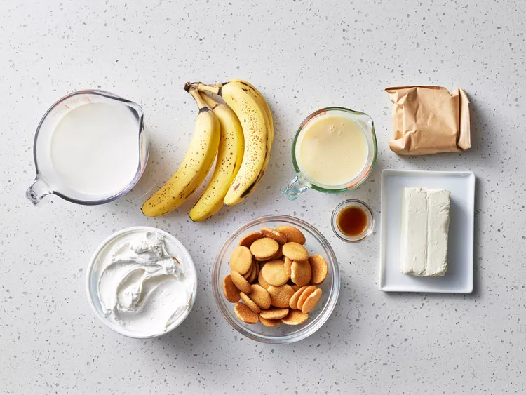
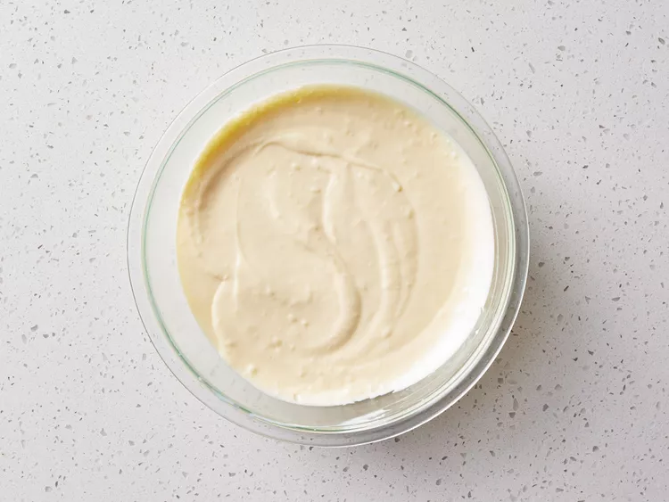
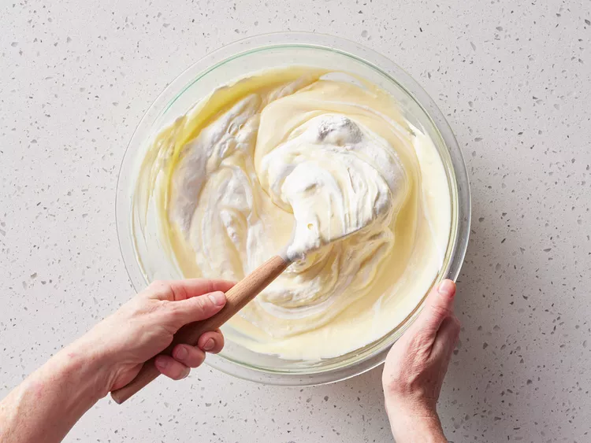
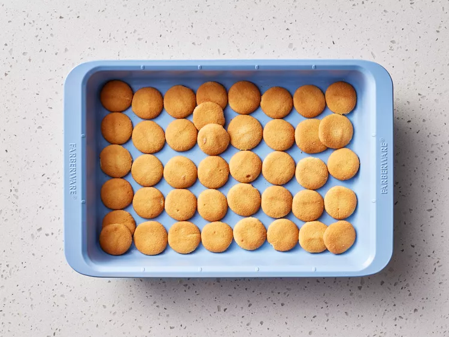
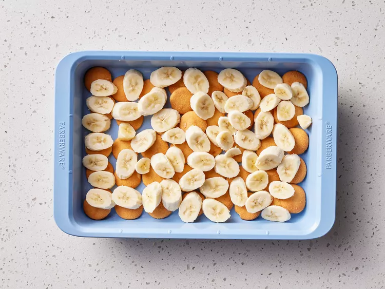
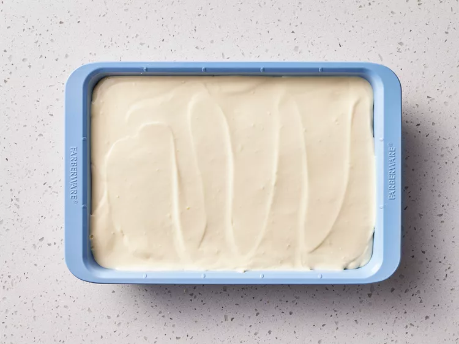
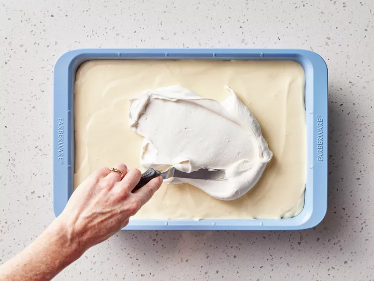

Photo by Dotdash Meredith Food Studios
A banana pudding with cream cheese, condensed milk, and vanilla wafers that's quick and easy to make. Enjoy!
Gather all your ingredients.
Photo by Dotdash Meredith Food Studios
Beat cream cheese in a large bowl until fluffy. Beat in condensed milk, then pudding mix. Gradually mix in cold milk until smooth, followed by vanilla.
Photo by Dotdash Meredith Food Studios
Fold in 1⁄2 of the whipped topping.
Photo by Dotdash Meredith Food Studios
Line the bottom of a 9x13-inch dish with vanilla wafers.
Photo by Dotdash Meredith Food Studios
Arrange sliced bananas evenly on top.
Photo by Dotdash Meredith Food Studios
Cover with pudding mixture.
Photo by Dotdash Meredith Food Studios
Top with remaining whipped topping.
Photo by Dotdash Meredith Food Studios
Cover and chill in the refrigerator for at least 3 hours before serving.
Photo by Dotdash Meredith Food Studios